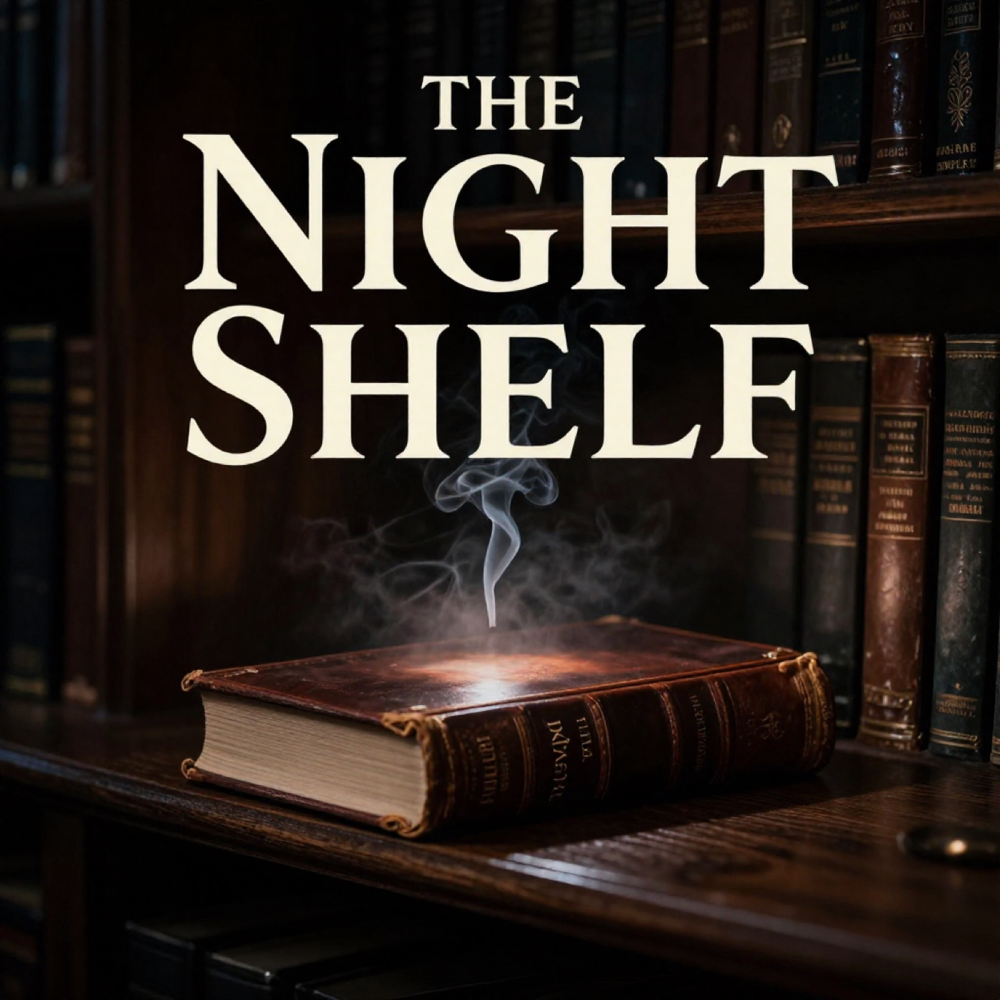

Curiosity Hour Long-form deep dives into history, popular science and business, written by Claude and narrated by AI voices. 1 episode · 14 min The Great Stink 2026-11-22 · 14:05 https://www.jankoprester.com/generated-podcasts/curiosity-hour/feed.xmlCopy feed URL
 The Night Shelf Weird fiction read aloud: strange, unsettling short stories for late listening. 3 episodes · 59 min The Temple, by H. P. Lovecraft 2026-11-22 · 34:53The Unison 2026-11-22 · 19:49The Third Knock 2026-11-22 · 4:25 https://www.jankoprester.com/generated-podcasts/night-shelf/feed.xmlCopy feed URL